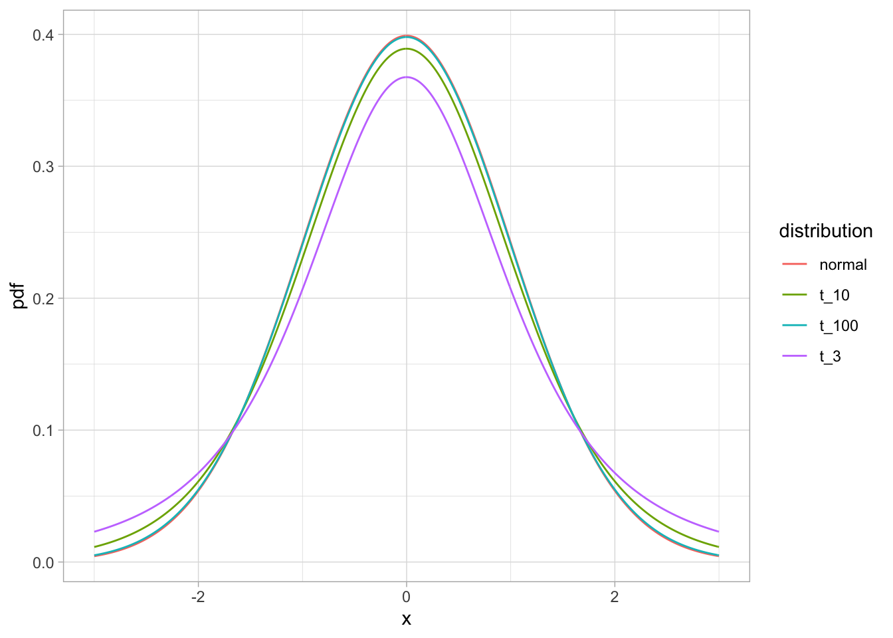

14 t-тест
14.1 Одновыборочный t-тест
Мы научились делать z-тест. Однако на практике он не используется, потому что предполагает, что мы откуда-то знаем стандартное отклонение в генеральной совокупности. На практике это обычно не так, поэтому мы оцениваем стандартное отклонение в генеральной совокупности на основе стандартного отклонения по выборке. Это приводит к тому, что тестовая статистика уже не распределена нормально, а распределена согласно t-распределению. Ну и статистика уже называется t-статистикой.
\[t = \frac{\overline{x} - \mu} {s_x / \sqrt{N}} \]
Иногда это t-распределение называют t-распределением Стьюдента, а соответствующий статистический тест - критерий Стьюдента. Дело в том, что его открыл сотрудник пивоварни Гиннесс Уильям Госсет. Сотрудникам Гиннесса было запрещено публиковать научные работы под своим именем, поэтому он написал свою знаменитую работу про t-распределение под псевдонимом “Ученик” (Student).
Форма этого распределения очень похожа на форму нормального распределения, но имеет более тяжелые “хвосты” распределения. При этом эта форма зависит от размера выборки: чем больше выборка, тем ближе распределение к нормальному. Этот параметр распределения называется степенями свободы (degrees of freedom) и вычисляется как \(N - 1\), где \(N\) - это размер выборки.
t_normal_pdf_gg <- tibble(x = seq(-3, 3, .01),
t_3 = dt(x, df = 3),
t_10 = dt(x, df = 10),
t_100 = dt(x, df = 100),
normal = dnorm(x)) %>%
pivot_longer(cols = -x, values_to = 'pdf', names_to = 'distribution') %>%
ggplot(aes(x = x, y = pdf, colour = distribution))+
geom_line()+
theme_light()
t_normal_pdf_gg
Как видите, чем больше выборка (и количество степеней свободы соответственно), тем ближе t-распределение к стандартному нормальному распределению. При 100 степенях свободы они уже почти не различимы! Поэтому на больших выборках разница между t-тестом и z-тестом будет минимальна, тогда как на маленьких выборках разница может быть значительной.
Давайте посчитаем t-статистику на тех же симулированных данных:
set.seed(42)
samp <- rnorm(100, 100, 15)
m <- mean(samp)
sem <- sd(samp)/sqrt(length(samp))
t <- (m - 100)/sem
t## [1] 0.3122351Давайте для сравнения еще раз посчитаем z-статистику:
(m - 100) / (15/sqrt(100))## [1] 0.3251482Как видите, расчет довольно схожий, разница только в том, откуда мы берем стандартное отклонение. Для z-статистики у нас был заранее известный параметр генеральной совокупности (что обычно не так), для t-статистики мы оценивали стандартное отклонение по выборке.
Давайте теперь посчитаем p-value. Мы будем пользоваться не функцией pnorm(), а функцией pt(), а в качестве параметра распределения указать количество степеней свобод в df =
pt(t, df = length(samp) - 1)## [1] 0.6222407Функция pt() считает от минус бесконечности до \(t\), а нам нужно от \(t\) до плюс бесконечности, потому что \(t\) больше 0:
1 - pt(t, df = length(samp) - 1)## [1] 0.3777593И не забываем умножать на 2, если мы хотим сделать двусторонний тест.
(1 - pt(t, df = length(samp) - 1))*2## [1] 0.7555186В отличие от z-теста, t-тест есть в базовом R.
t.test(samp, mu = 100)##
## One Sample t-test
##
## data: samp
## t = 0.31224, df = 99, p-value = 0.7555
## alternative hypothesis: true mean is not equal to 100
## 95 percent confidence interval:
## 97.38831 103.58714
## sample estimates:
## mean of x
## 100.4877Да, конечно, мы могли сразу запустить эту функцию и получить результаты. Обычно именно так вы и будете делать. Зато теперь вы знаете, что стоит за всеми числами в результате выполнения функции t.test(). Здесь можно увидеть выборочное среднее как оценку среднего в генеральной совокупности, 95% доверительный интервал для оценки среднего в генеральной совокупности, t-статистику, степени свобод и p-value.
14.2 Двухвыборочный t-тест
Одна из наиболее часто встречающихся задач при анализе данных - это сравнение средних двух выборок. Для этого нам тоже понадобится t-тест, но теперь \(H_0\) нужно сформулировать по-другому: что две генеральные совокупности (из которых взяты соответствующие выборки) имеют одинаковое среднее. \[H_0: \mu_1 = \mu_2\]
Ну а альтернативная гипотеза, что эти две выборки взяты из распределений с разным средним в генеральной совокупности. \[H_1: \mu_1 \ne \mu_2\]
Есть две разновидности двухвыборочного t-теста: зависимый t-тест и независимый t-тест. Различие между зависимыми и независимыми тестами принципиальное, мы с ним еще будем сталкиваться.
Зависимые тесты предполагают, что каждому значению в одной выборке мы можем поставить соответствующее значение из другой выборки. Обычно это повторные измерения какого-либо признака в разные моменты времени. В независимых тестах нет возможности сопоставить одно значение с другим. Мы уже не можем напрямую соотнести значения в двух выборках друг с другом, более того, размер двух выборок может быть разным!
Использование зависимых и независимых тестов связано с использованием внутрииндивидуального и межиндивидуального экспериментальных дизайнов в планировании научных экспериментов. Даже если вы не планируете в дальнейшем заниматься проведением экспериментов, понимание различий между двумя видами дизайнов поможет вам понять разницу между зависимыми и независимыми тестами.
Например, мы хотим исследовать влияние кофеина на скорость реакции. Можно поступить по-разному:
Набрать выборку, каждому испытуемому дать либо кофеин (например, в виде раствора небольшого количества кофеина в воде), либо обычную воду. Что именно получит испытуемый получит определяется случайным образом. Испытуемый не должен знать, что ему дают (слепое тестирование), а в идеале этого должен не знать даже экспериментатор, который дает напиток и измеряет показатели (двойное слепое тестирование). Посчитать скорость выполнения выбранной задачи, отправить домой. Это межинидивидуальный экспериментальный дизайн, для анализа результатов которого нам понадобится независимый t-тест.
Набрать выборку, каждому испытуемому дать и обычную воду, и воду с кофеином, записывать скорость решения задач после употребления простой воды и после употребления воды с кофеином, соответственно. В данном случае будет случайным образом варьироваться порядок предъявления: одни испытуемые сначала получат обычную воду, а потом воду с кофеином, другие испытуемые — наоборот. Для такого эксперимента понадобится меньше участников, но оно будет дольше для каждого участника. Более того, в этом случае мы учтем межиндивидуальные различия участников: одни участники в среднем решают задачи быстрее других. Это внутриинидивидуальный экспериментальный дизайн, для анализа результатов которого нам понадобится зависимый t-тест.
| Внутрииндивидуальный план | Межиндивидуальный план |
|---|---|
| Зависимый t-тест | Независимый t-тест |
Итак, с тем, когда использовать зависимый, а когда независимый t-тест, более-менее разобрались, давайте опробуем их!
14.2.1 Двухвыборочный зависимый t-тест
Двухвыборочный зависимый t-тест — это то же самое, что и одновыборочный t-тест, только для разницы между связанными значениями. Поскольку наша нулевая гипотеза звучит, что средние должны быть равны,
\[H_0: \mu_1 = \mu_2\]
то при верности нулевой гипотезы \[\mu_1 - \mu_2 = 0\].
Тогда вместо \(x\) подставим \(d\) — разницу (вектор разниц) между парами значений. Получаем вот что:
\[t = \frac{\overline{x} - \mu} {s_x / \sqrt{N}} = \frac{\overline{d} - (\mu_1 - \mu_2)} {s_d / \sqrt{N}} = \frac{\overline{d} - 0} {s_d / \sqrt{N}} = \frac{\overline{d}} {s_d / \sqrt{N}}\]
Мы будем использовать данные с курса по статистике Университета Шеффилда про эффективность диет. Мы вытащим оттуда данные по диете номер 1 и посмотрим, действительно ли она помогает сбросить вес.
diet <- readr::read_csv("https://raw.githubusercontent.com/Pozdniakov/tidy_stats/master/data/stcp-Rdataset-Diet.csv")
diet1 <- diet %>%
filter(Diet == 1)Провести двухвыборочный t-тест можно в R двумя базовыми способами. Первый вариант - это дать два вектора значений. Это удобно в случае широкого формата данных.
t.test(diet1$pre.weight, diet1$weight6weeks, paired = TRUE)##
## Paired t-test
##
## data: diet1$pre.weight and diet1$weight6weeks
## t = 7.2168, df = 23, p-value = 2.397e-07
## alternative hypothesis: true difference in means is not equal to 0
## 95 percent confidence interval:
## 2.354069 4.245931
## sample estimates:
## mean of the differences
## 3.3Второй вариант - используя формулы. Это удобно при длинном формате данных:
diet1_long <- diet1 %>%
pivot_longer(
cols = c(pre.weight, weight6weeks),
names_to = "when",
values_to = "weight"
)
t.test(weight ~ when, data = diet1_long, paired = TRUE)##
## Paired t-test
##
## data: weight by when
## t = 7.2168, df = 23, p-value = 2.397e-07
## alternative hypothesis: true difference in means is not equal to 0
## 95 percent confidence interval:
## 2.354069 4.245931
## sample estimates:
## mean of the differences
## 3.3t.test(diet1_long$weight ~ diet1_long$when, paired = TRUE)##
## Paired t-test
##
## data: diet1_long$weight by diet1_long$when
## t = 7.2168, df = 23, p-value = 2.397e-07
## alternative hypothesis: true difference in means is not equal to 0
## 95 percent confidence interval:
## 2.354069 4.245931
## sample estimates:
## mean of the differences
## 3.3В обоих вариантах мы использовали paired = TRUE , чтобы обозначить использование именно зависимого (т.е. парного) t-теста.
| Внутрииндивидуальный план | Межиндивидуальный план |
|---|---|
| Зависимый t-тест | Независимый t-тест |
t.test(..., paired = TRUE) |
t.test(..., paired = FALSE) |
14.2.2 Двухвыборочный независимый t-тест
В случае независимого t-теста формула отличается. Однако гипотеза остается такой же и логика примерна та же.
У двух выборок могут различаться стандартные отклонения, поэтому для подсчет стандартной ошибки разницы средних для независимых выборок нужно сначала посчитать объединенное стандартное отклонение (pooled standard deviation):
\[s^2_{pool} = \frac {(n_1-1)s^2_1 + (n_2-1)s^2_2} {(n_1 - 1) + (n_2 -1)}\]
Тогда стандартная ошибка разницы средних считается следующим образом:
\[se_{m_1 - m_2} = \sqrt {(s^2_{pool}) (\frac {1} {n_1} + \frac {1}{n_2} )}\]
Выглядит сложно, но по своей сути это что-то вроде усредненного стандартного отклонения (с учетом размеров выборок). Ну а t-статистика затем считается просто:
\[t = \frac {(m_1 - m_2) - (\mu_1 - \mu_2)} {se_{m_1 - m_2}} = \frac {(m_1 - m_2) - 0} {se_{m_1 - m_2}} = \frac {m_1 - m_2} {se_{m_1 - m_2}}\]
Давайте теперь опробуем независимый t-тест для сравнения веса испытуемых двух групп после диеты. Мы снова воспользуемся функцией t.test(), но теперь уже поставим paired = FALSE:
diet12 <- diet %>%
filter(Diet %in% 1:2)
t.test(weight6weeks ~ Diet, data = diet12, paired = FALSE)##
## Welch Two Sample t-test
##
## data: weight6weeks by Diet
## t = 0.5711, df = 48.724, p-value = 0.5706
## alternative hypothesis: true difference in means is not equal to 0
## 95 percent confidence interval:
## -3.753268 6.732897
## sample estimates:
## mean in group 1 mean in group 2
## 69.57500 68.08519Если присмотритесь, то увидите, что со степенями свободы что-то странное. Они дробные! Дело в том, что мы провели не совсем “настоящий” t-тест, а его очень близкую альтернативу под названием тест Уэлча (Welch test), который иногда называют поправкой Уэлча к t-тесту. Эта поправка позволяет тесту лучше справляться с выборками с разной дисперсией. Даже если у нас нет проблем с разной дисперсией, то от поправки Уэлча хуже не будет, поэтому это вариант по умолчанию в R.
Но если его хочется отключить, то нужно поставить var.equal = TRUE.
t.test(weight6weeks ~ Diet, data = diet12, paired = FALSE, var.equal = TRUE)##
## Two Sample t-test
##
## data: weight6weeks by Diet
## t = 0.5645, df = 49, p-value = 0.575
## alternative hypothesis: true difference in means is not equal to 0
## 95 percent confidence interval:
## -3.813769 6.793399
## sample estimates:
## mean in group 1 mean in group 2
## 69.57500 68.0851914.3 Допущения t-теста
Чтобы подсчет p-value был корректным, некоторые допущения должны быть выполнены.
- Нормальное распределение. Это самое известное допущение, но чуть ли не наименее важное. Часто утверждается, что выборки должны быть взяты из нормального распределения. Это не совсем так: да, верно, это достаточное условие, но не необходимое. В первую очередь, важно именно выборочное распределение (средних разниц или разниц средних), которое достигается за счет центральной предельной теоремы (13.8) особенно при большой выборке (Lumley et al. 2002). Отсюда и все правила в духе “для t-теста распределение должно быть нормальным, но если n > 30, то это необязательно.” Откуда именно 30? Да ниоткуда, просто. Как и со всеми точными числами в статистике.
Для проверки на нормальность существуют различные статистические тесты. Самый известный из них — тест Шапиро-Уилка. Его можно провести в R при помощи функции shapiro.test().
shapiro.test(samp)##
## Shapiro-Wilk normality test
##
## data: samp
## W = 0.98122, p-value = 0.1654В нашем случае p-value больше 0.05, что логично: мы взяли эту выборку именно из нормального распределения. Если p-value меньше уровня \(\alpha\), который у нас стандартно 0.05, то мы можем отвергнуть нулевую гипотезу о том, что выборка взята из нормального распределения. Если это так, то нам нужно, по идее, отказаться от t-теста и использовать непараметрический тест, который не имеет требований к распределению исследуемой переменной.
Однако проведения теста на нормальность для проверки допущения о нормальности — вещь довольно бессмысленная. Дело в том, что тест Шапиро-Уилка — это такой же статистический тест, как и все прочие: чем больше выборка, тем с большей вероятностью он “поймает” отклонения от нормальности, чем меньше выборка, тем с меньшей вероятностью он обнаружит даже серьезные отклонения от нормальности. А нам-то нужно наоборот! При большой выборке отклонения от нормальности нам не особо страшны, а при маленькой тест все равно ничего не обнаружит. Более того, идеально нормальных распределений в природе вообще почти не существует! А это значит, что при достаточно большой выборке тест Шапиро-Уилка практически всегда будет находить отклонения от нормальности. Все это делает его малоинформативным при тестировании допущения о нормальности. Это же верно и для других тестов на нормальность.
Другой способ проверять допущение о нормальности — это проверять визуально с помощью гистограммы или Q-Q plot (см. @ref(lm_a))
Для двувыборочного независимого t-теста выборки должны быть взяты из распределения с одинаковыми дисперсиями. Однако это не так критично с применением поправки Уэлча.
Независимость значений (или пар) в выборке. Типичным примером нарушения независимости является случай, когда t-тест применяется на неусредненных (например, по испытуемому) значениях. Еще один пример нарушения независимости — использование одного наблюдения несколько раз или использование одного и того же испытуемого несколько раз. Определить независимость можно следующим мысленным экспериментом: могу ли я хоть как-нибудь предсказать следующее значение в выборке? Например, в случае с несколькими значениями от одного испытуемого я могу ориентироваться на его предыдущие результаты и предсказать последующие результаты лучше, чем на основе простого среднего по всем остальным значениям. Это значит, что допущение о независимости нарушено.
14.4 Непараметрические аналоги t-теста
Если выборка не очень большая и взята из сильно ассиметричного распределения или выборка представляет собой порядковые данные, то можно воспользоваться непараметрическими альтернативами для t-теста.
Непараметрические тесты не имеют допущений о распределении, что делает их более универсальными. Большинство подобных тестов подразумевает превращение данных в ранги, т.е. внутри этих тестов происходит преобразование в ранговую шкалу. Такое преобразование может снизить статистическую мощность теста и привести к повышению вероятности ошибки второго рода.
14.4.1 Тест Уилкоксона
Непараметрический аналог двустороннего зависимого t-теста называется тестом Уилкоксона. Функция для него называется wilcox.test(), и она имеет такой же синтаксис, как и t.test().
wilcox.test(weight ~ when, data = diet1_long, paired = TRUE)##
## Wilcoxon signed rank test with continuity correction
##
## data: weight by when
## V = 299, p-value = 2.203e-05
## alternative hypothesis: true location shift is not equal to 0Не пугайтесь, когда видите сообщение “Есть совпадающие значения: не могу высчитать точное p-значение”. Это означает, что в ваших данных есть повторяющиеся значения, поэтому расчет p-value в данном случае — это некоторая апроксимация, но в большинстве случаев это не играет серьезной роли.
14.4.2 Тест Манна-Уитни
Непараметрическим аналогом двустороннего независимого t-теста является тест Манна-Уитни. Для него тоже используется функция wilcox.test(), только в данном случае с параметром paired = FALSE.
wilcox.test(weight ~ when, data = diet1_long, paired = FALSE)##
## Wilcoxon rank sum test with continuity correction
##
## data: weight by when
## W = 357.5, p-value = 0.1546
## alternative hypothesis: true location shift is not equal to 0| Внутрииндивидуальный план | Межиндивидуальный план |
|---|---|
| Зависимый t-тест: | Независимый t-тест: |
t.test(..., paired = TRUE) |
t.test(..., paired = FALSE) |
| Тест Уилкоксона: | Тест Манна-Уитни: |
wilcox.test(..., paired = TRUE) |
wilcox.test(..., paired = FALSE) |